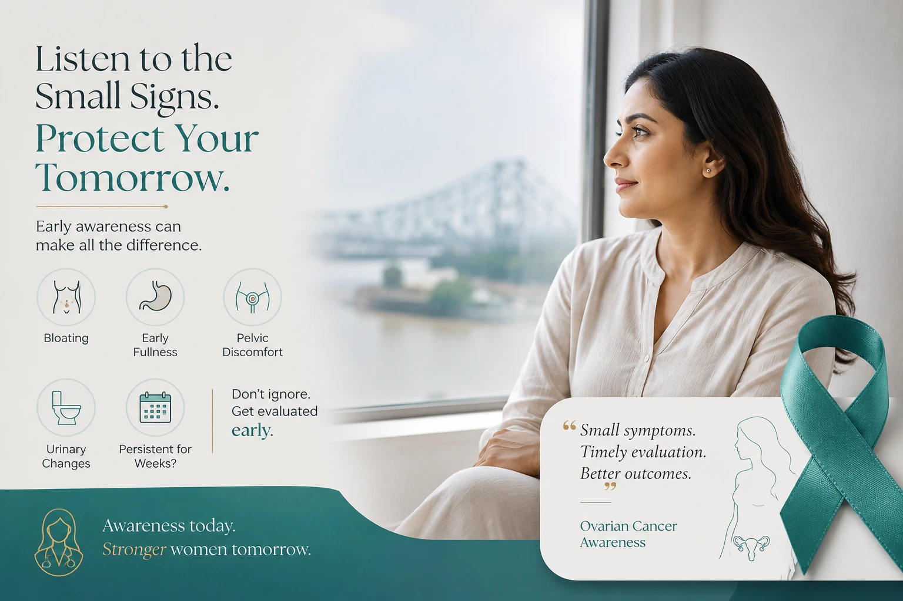

Small symptoms. Timely evaluation. Better outcomes.
Many women in Kolkata live with bloating, lower abdominal discomfort, or a feeling of fullness after eating and assume it is gas, acidity, or a minor digestive issue. In most cases, these symptoms do have simple causes. But when they keep returning — when they are new, persistent, and present almost daily for more than two to three weeks — they should be taken seriously and evaluated by a doctor.
Ovarian cancer is difficult to notice early because its symptoms are mild, vague, and easily mistaken for something else. This is not a reason for alarm. It is a reason for awareness.
Why Ovarian Cancer Is Often Missed
The ovaries sit deep inside the pelvis. A tumour growing on or within them can reach a significant size before it causes any noticeable discomfort. Unlike breast or cervical cancer, there is no approved routine screening test for ovarian cancer for women at average risk — no equivalent of a mammogram or a Pap smear that can be used across the general population.
This is not because researchers have not tried. It is because the tests available — the CA-125 blood test and transvaginal ultrasound — are simply not accurate enough to be used as routine screening tools. CA-125 can be normal in early cancer, and it can also be elevated in entirely benign conditions. Ultrasound can detect a mass, but cannot confirm whether it is cancerous. Major medical organisations worldwide do not recommend either test for routine screening in women without symptoms.
"A normal CA-125 or a normal ultrasound is not reassurance if you have persistent symptoms. When symptoms are present, they need evaluation — regardless of these test results."
The result of all this is that more than 70% of ovarian cancer cases in India are diagnosed at an advanced stage, when treatment is more difficult and survival rates fall sharply. When detected at Stage I, the five-year survival rate exceeds 90%. At Stage III or IV, that figure drops to between 20 and 30%.
The gap between these two numbers is, in most cases, the difference between a curable disease and a very difficult one. And the gap is closeable — through awareness.
Symptoms That Deserve Medical Attention
These symptoms are not specific to ovarian cancer. But if they are new, persistent, and happening almost daily for more than two to three weeks — without an obvious cause — they should be evaluated:
- Persistent bloating — not the kind that comes and goes after a meal, but a consistent, daily sense of abdominal fullness
- Feeling full very quickly after eating only a small amount
- Pelvic or lower abdominal pain or pressure
- Frequent need to urinate, or a feeling that the bladder does not fully empty
- Changes in bowel habits — persistent constipation or loose motions without an obvious cause
- Unexplained fatigue
- Lower back pain without a clear musculoskeletal reason
- Unexplained weight loss
- A visibly swollen abdomen — this can indicate fluid accumulation (ascites) and usually signals more advanced disease
Do not manage these symptoms repeatedly with antacids or self-medication for gas and acidity. If they persist for more than two to three weeks, see a doctor — not to confirm cancer, but to rule it out properly.
Who May Be at Higher Risk
Ovarian cancer can affect any woman, but certain factors are known to increase risk. Higher risk does not mean cancer will definitely develop — it means symptoms should be taken more seriously and discussed with a doctor earlier.
- Family history of ovarian cancer in a first-degree relative (mother, sister, daughter), or a strong family history of breast cancer on either side of the family
- BRCA1 or BRCA2 gene mutations — these carry a significantly elevated lifetime risk of ovarian cancer
- Lynch syndrome — an inherited condition that also raises ovarian cancer risk
- Endometriosis — associated with specific subtypes of ovarian cancer
- Never having been pregnant (nulliparity)
- Early onset of periods or late menopause
If you have a first-degree relative with ovarian cancer, or a strong family history of breast cancer, discuss the possibility of genetic testing with your doctor. Knowing your risk allows for appropriate and timely decision-making.
How Ovarian Cancer Is Evaluated
Because there is no reliable screening test, evaluation begins with symptoms prompting investigation. If ovarian cancer is suspected, a doctor may advise one or more of the following:
- Transvaginal ultrasound (TVS) — the first-line imaging test. Detects a mass or cyst but cannot confirm whether it is cancerous.
- CA-125 blood test — used to help assess the likelihood of malignancy alongside imaging, not as a standalone test. Also used to monitor treatment response once a diagnosis is made.
- CT scan of the chest, abdomen and pelvis — used to assess whether disease has spread beyond the ovary.
- Surgical diagnosis and staging — unlike most cancers, ovarian cancer is typically confirmed and staged through surgery, which also serves as the first step of treatment.
If there is a concern for cancer based on symptoms, imaging, or blood tests, the right specialist is a Gynaecological Oncologist — a doctor specifically trained in cancers of the female reproductive organs.
Treatment: What It Involves
Treatment depends on the stage, type, and individual clinical circumstances. It may include:
- Surgery — the cornerstone of treatment. The standard operation involves removal of the uterus, both ovaries, both fallopian tubes, and the omentum. The goal is to remove as much tumour as possible, as outcomes from subsequent chemotherapy are directly related to how much residual disease remains.
- Chemotherapy — typically administered after surgery, most commonly a combination of carboplatin and paclitaxel. In some patients with very advanced disease, chemotherapy is given before surgery to reduce tumour size.
- HIPEC (Hyperthermic Intraperitoneal Chemotherapy) — an advanced technique used in selected cases of advanced disease, where heated chemotherapy is delivered directly into the abdominal cavity during surgery. It is not suitable for all patients and is offered at specialist centres.
- Fertility-sparing surgery — an option for carefully selected young women with early-stage disease who wish to preserve the possibility of future pregnancy. This requires detailed specialist assessment.
The treatment plan is always decided by the specialist based on the individual — the stage, the type of cancer, the patient's overall health, and their personal circumstances.
Frequently Asked Questions
A Final Note
Ovarian cancer does not begin with dramatic symptoms. It begins with small, persistent changes — in appetite, in the way the abdomen feels, in bladder habits, in energy levels. These changes, when they last more than two to three weeks without explanation, deserve evaluation.
For women in Kolkata, the message is straightforward: if bloating, pelvic discomfort, early fullness, or urinary changes continue for weeks and do not have an obvious cause, see a doctor. Not because these symptoms confirm cancer — they almost certainly do not — but because early evaluation is always simpler, safer, and more effective than delayed evaluation.
Awareness today. Stronger women tomorrow.
Have symptoms that need evaluation?
Dr. Dipanwita Banerjee offers consultations at CNCI Kolkata for ovarian, uterine, and cervical cancer evaluation and treatment.